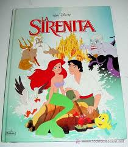
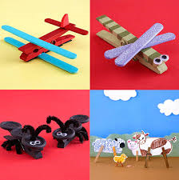

Ejemplos
Registro descriptivo de una lectura
|
REGISTRO DESCRIPTIVO Evaluado: Mtra Ingrid Valerio Luna Fecha 18 de agosto del 2014 |
|
|
COMPETENCIA: Escucha,interpreta y emite mensajes pertinentes mediante la utilización de medios y herramientas apropiadas |
LUGAR: Salón de clase |
|
INDICADOR: Identifica ideas clave en un texto |
Actividad evaluada |
|
Alumno: Maria Fernanda Ramos Luna |
|
|
Descripción de lo observado : El alumno identificó los conceptos claves de la lectura la aventura de Cristobal Colón e interpreto y utilizo correctamente la información para elaborar un mapa mental |
|
|
Interpretación de lo observado: El alumno logra alcanzar la competencia con un alto grado |
|
Registro descriptivo de un cuento.
|
Tiempo de observación. 10 min. |
Estudiante Juan Carlos Hernández López |
Docente Mtra. Ingrid Valerio Luna |
Grado: 6 año |
Lugar: Salón de clases |
|
PROPÓSITO ESPECÍFICO: Participar en intercambios comunicativos con propiedad y adecuación |
||||
|
CRITERIOS: Participación – Adecuación- Comportamiento |
||||
|
INDICADORES: 1. Participa en conversaciones como hablante: se expresa en forma cordial, respetuosa y espontánea. 2. Se inicia en el manejo de las normas y en el respeto a las normas de de intercambio oral. 3. Demuestra iniciativa al realizar actividades de juegos colectivos. 4. Participa en conversaciones como oyente: escucha con atención |
||||
Descripción
La docente leía el cuento de "La Sirenita", Ana Rosa la mira. Cuando la maestra termina de narrar el cuento pregunta a los niños: ¿Cuál es el tema del cuento?, Jorge y Ana Rosa levantan la mano y la maestra le da la oportunidad de participar a Ana Rosa. La niña responde "La Sirenita" y le dice a la maestra: "por favor lea el cuento otra vez". Al concluir la narrativa del cuento, en la segunda lectura, Ana Rosa alza su mano para hacerle un comentario. La maestra, le da su aprobación y la niña le expone que ella quiere ser como la Sirenita que puede vivir en el agua y la tierra al mismo tiempo. La maestra responde que "esto es un cuento Ana Rosa, y los personajes son inventados". Luego, la maestra continúa formulando preguntas y respuestas al resto de los niños, sobre la temática de la narrativa. Al finalizar la actividad, suena el timbre indicando la salida el receso y Ana Rosa le pide permiso a la maestra para quedarse a mirar las ilustraciones del cuento.
Interpretación.
Ana Rosa participa en conversaciones como oyente y hablante, ya que pide permiso al hablar y hacer sus comentarios, escucha atentamente y responde espontáneamente a lo que se le pregunta expresándose en forma cordial y respetuosa. Demuestra iniciativa al dialogar utilizando un lenguaje adecuado y con propiedad en los contenidos de las conversaciones.

Registro descriptivo
Alumno: Ricardo Soto Juarez Fecha: 18/08/14 Edad: 8 años Lugar: Taller de Madera Momento: durante la clase Grado: 4to
Competencias: Destreza y habilidad para realizar un trabajo manual.
Descripción
Al inicio de la ejecución de la elaboración de objetos de madera,el alumno, demostró habilidad y destreza en el manejo de las herramientas, lo que contribuyó a la realización del trabajo con confianza en si mismo.
Interpretación
| La seguridad del manejo de las herramientas por el alumno y la creatividad, contribuyeron al trabajo excelente realizado en madera |
